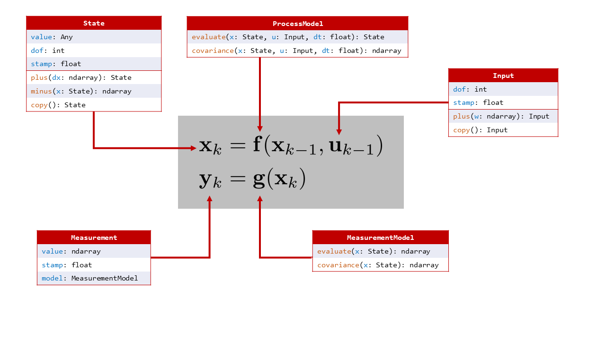

Welcome to navlie!¶

navlie is a state estimation package specifically designed for both traditional and Lie-group-based estimation problems!
The core idea behind this project is to use abstraction in such a way that both traditional and Lie-group-based problems fall under the exact same interface. Using this, a single estimator implementation can operate on a variety of state definitions, such as the usual vector space, and any Lie group. We allow the user to define their custom state, process model, and measurement models, after which they will have a variety of algorithms available to them, including:
Extended Kalman Filter
Iterated Extended Kalman Filter
Sigmapoint Kalman Filters (Unscented, Spherical Cubature, Gauss-Hermite)
Interacting Multiple Model Filter
Batch MAP Estimation
In addition, navlie contains
A large collection of common process and measurement models
Out-of-the-box on-manifold numerical Jacobians using finite differencing
Various utils for plotting, error, and consistency evaluation
Monte Carlo experiment executor with result aggregation
A preintegration module for linear, wheel odometry, and IMU process models
By implementing a few classes, the user can model a large variety of problems. The following diagram summarizes the abstraction
{kind=link}
Installation¶
Clone this repo, change to its directory, and execute
git clone git@github.com:decargroup/navlie.git
cd navlie && pip install -e .
This command should automatically install all dependencies, including our package pymlg for back-end Lie group mathematical operations.
Examples¶
A more in-depth tutorial can be found on this website, but there are also many examples found in the examples/ folder. Simply run these as python3 scripts.